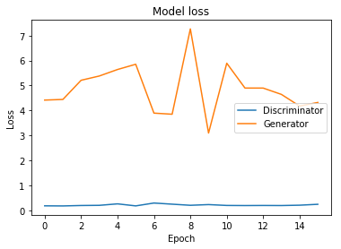

MODEL
Two Deep Generative models were used for this project.
Generative Adversarial Networks (GANs) and Variational Auto Encoders (VAEs).
Generative Adversarial Networks (GAN). Generative adversarial networks (GANs) has been successfully applied to many for so many ways for data generation such as in images and natural language.
VAEs have already shown promise in generating many kinds of complicated data, including handwritten digits, faces , house numbers [8,6], CIFAR images [9], physical models of scenes, segmentation , and predicting the future from static images.
Generative Adversarial Networks (GAN). Generative adversarial networks (GANs) has been successfully applied to many for so many ways for data generation such as in images and natural language.
VAEs have already shown promise in generating many kinds of complicated data, including handwritten digits, faces , house numbers [8,6], CIFAR images [9], physical models of scenes, segmentation , and predicting the future from static images.
Training Loss for VAE.
Distribution plot for showing the reconstruction with california data


Training Loss for GAN.



Conclusion.
This paper proposed a method to generate synthetic Household Electrical appliance energy usage scenarios using Variational Autoencoder and GANs. The trained model is able to produce synthetic that follow the original data distribution without memorizing and that can be used for further analysis. In the future, explore the use of Conditional GANs and Conditional VAEs to produce data conditioned on a particular region/state. Also, add categorical variables such as building type, and city to generate them as they would be useful for forecasting and understanding the demographics of the regions.